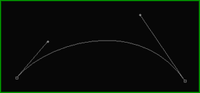
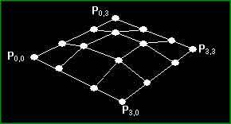
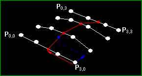

| 第28課 |
|
 |
貝塞爾曲面 作者: David Nikdel ( ogapo@ithink.net ) 這篇教程旨在介紹貝塞爾曲面，希望有比我更懂藝術的人能用她作出一些很COOL的東東並且展示給大家。教程不能用做一個完整的貝塞爾曲面庫，而是一個展示概念的程序讓你熟悉曲面怎樣實現的。而且這不是一篇正規的文章，為了方便理解，我也許在有些地方術語不當；我希望大家能適應這個。最後，對那些已經熟悉貝塞爾曲面想看我寫的如何的，真是丟臉；-）但你要是找到任何紕漏讓我或者NeHe知道，畢竟人無完人嘛？還有，所有代碼沒有像我一般寫程序那樣做優化，這是故意的。我想每個人都能明白寫的是什麼。好，我想介紹到此為止，繼續看下文！ 數學：：惡魔之音：：（警告：內容有點長~） 好，如果想理解貝塞爾曲面沒有對其數學基本的認識是很難的，如果你不願意讀這一部分或者你已經知道了關於她的數學知識你可以跳過。首先我會描述貝塞爾曲線再介紹生成貝塞爾曲面。 奇怪的是，如果你用過一個圖形程序，你就已經熟悉了貝塞爾曲線，也許你接觸的是另外的名稱。它們是畫曲線的最基本的方法，而且通常被表示成一系列點，其中有兩個點與兩端點表示左右兩端的切線。下圖展示了一個例子。  這是最基礎的貝塞爾曲線（長點的由很多點在一起（多到你都沒發現））。這個曲線由4個點定義，有2個端點和2個中間控制點。對計算機而言這些點都是一樣的，但是特意的我們通常把前後兩對點分別連接，因為他們的連線與短點相切。曲線是一個參數化曲線，畫的時候從曲線上平均找幾點連接。這樣你可以控制曲線曲面的精度（和計算量）。最通常的方法是遠距離少細分近距離多細分，對視點，看上去總是很完好的曲面而對速度的影響總是最小。 貝塞爾曲面基於一個基本方程，其他複雜的都是基於此。方程為： t + (1 - t) = 1 看起來很簡單不是？的確是的，這是最基本的貝塞爾曲線，一個一維的曲線。你也許從術語中猜到，貝塞爾曲線是多項式形式的。從線性代數知，一個一維的多項式是一條直線，沒多大意思。好，因為基本方程對所有t都成立，我們可以平方，立方兩邊，怎麼都行，等式都是成立的，對吧？好，我們試試立方。 (t + (1-t))^3 = 1^3 t^3 + 3*t^2*(1-t) + 3*t*(1-t)^2 + (1-t)^3 = 1 這是我們最常用的計算貝塞爾曲面的方程，a)她是最低維的不需要在一個平面內的多項式（有4個控制點），而且b)兩邊的切線互相沒有聯繫（對於2維的只有3個控制點）。那麼你看到了貝塞爾曲線了嗎？呵呵，我們都沒有，因為我還要加一個東西。 好，因為方程左邊等於1，可以肯定如果你把所有項加起來還是等於1。這是否意味著在計算曲線上一點時可以以此決定該用每個控制點的多少呢？（答案是肯定的）你對了！當我們要計算曲線上一點的值我們只需要用控制點（表示為向量）乘以每部分再加起來。基本上我們要用0<=t<=1，但不是必要的。不明白了把？這裡有函數： P1*t^3 + P2*3*t^2*(1-t) + P3*3*t*(1-t)^2 + P4*(1-t)^3 = Pnew 因為多項式是連續的，有一個很好的辦法在4個點間插值。曲線僅經過P1，P4，分別當t=1,0。 好，一切都很好，但現在我怎麼把這個用在3D裡呢？其實很簡單，為了做一個貝塞爾曲面，你需要16個控制點，（4*4），和2個變量t,v。你要做的是計算在份量v的沿4條平行曲線的點，再用這4個點計算在份量t的點。計算了足夠的這些點，我們可以用三角帶連接他們，畫出貝塞爾曲面。   恩，我認為現在已經有足夠的數學背景了，看代碼把！ |
 |
#include <math.h> // 數學庫
#include <stdio.h> // 標準輸入輸出庫
#include <stdlib.h> // 標準庫
typedef struct point_3d { // 3D點的結構
double x, y, z;
} POINT_3D;
typedef struct bpatch { // 貝塞爾面片結構
POINT_3D anchors[4][4]; // 由4x4網格組成
GLuint dlBPatch; // 繪製面片的顯示列表名稱
GLuint texture; // 面片的紋理
} BEZIER_PATCH;
BEZIER_PATCH mybezier; // 創建一個貝塞爾曲面結構
BOOL showCPoints=TRUE; // 是否顯示控制點
int divs = 7; // 細分精度，控制曲面的顯示精度
|
以下是一些簡單的向量數學的函數。如果你是C++愛好者你可以用一個頂點類（保證其為3D的）。 | |
// 兩個向量相加，p=p+q
POINT_3D pointAdd(POINT_3D p, POINT_3D q) {
p.x += q.x; p.y += q.y; p.z += q.z;
return p;
}
// 向量和標量相乘p=c*p
POINT_3D pointTimes(double c, POINT_3D p) {
p.x *= c; p.y *= c; p.z *= c;
return p;
}
// 創建一個3D向量
POINT_3D makePoint(double a, double b, double c) {
POINT_3D p;
p.x = a; p.y = b; p.z = c;
return p;
}
|
這基本上是用C寫的3維的基本函數，她用變量u和4個頂點的數組計算曲線上點。每次給u加上一定值，從0到1，我們可得一個很好的近似曲線。
求值器基於Bernstein多項式定義曲線，定義p(u ')為： 這裡Ri為控制點 u'=(u-u1)/(u2-u1) 當為貝塞爾曲線時，控制點為4，相應的4個Bernstein多項式為: |
|
// 計算貝塞爾方程的值
// 變量u的範圍在0-1之間
POINT_3D Bernstein(float u, POINT_3D *p) {
POINT_3D a, b, c, d, r;
a = pointTimes(pow(u,3), p[0]);
b = pointTimes(3*pow(u,2)*(1-u), p[1]);
c = pointTimes(3*u*pow((1-u),2), p[2]);
d = pointTimes(pow((1-u),3), p[3]);
r = pointAdd(pointAdd(a, b), pointAdd(c, d));
return r;
}
|
這個函數完成共享工作，生成所有三角帶，保存在display list。我們這樣就不需要每貞都重新計算曲面，除了當其改變時。另外，你可能想用一個很酷的效果，用MORPHING教程改變控制點位置。這可以做一個很光滑，有機的，morphing效果，只要一點點開銷（你只要改變16個點，但要從新計算）。「最後」的數組元素用來保存前一行點，（因為三角帶需要兩行）。而且，紋理坐標由表示百分比的u,v來計算（平面映射）。 還有一個我們沒做的是計算法向量做光照。到了這一步，你基本上有2種選擇。第一是找每個三角形的中心計算X，Y軸的切線，再做叉積得到垂直與兩向量的向量，再歸一化，得到法向量。或者（恩，這是更好的方法）你可以直接用三角形的法矢（用你最喜歡的方法計算）得到一個近似值。我喜歡後者；我認為不值得為了一點點真實感影響速度。 |
|
// 生成貝塞爾曲面的顯示列表
GLuint genBezier(BEZIER_PATCH patch, int divs) {
int u = 0, v;
float py, px, pyold;
GLuint drawlist = glGenLists(1); // 創建顯示列表
POINT_3D temp[4];
POINT_3D *last = (POINT_3D*)malloc(sizeof(POINT_3D)*(divs+1)); // 更具每一條曲線的細分數，分配相應的內存
if (patch.dlBPatch != NULL) // 如果顯示列表存在則刪除
glDeleteLists(patch.dlBPatch, 1);
temp[0] = patch.anchors[0][3]; // 獲得u方向的四個控制點
temp[1] = patch.anchors[1][3];
temp[2] = patch.anchors[2][3];
temp[3] = patch.anchors[3][3];
for (v=0;v<=divs;v++) { // 根據細分數，創建各個分割點額參數
px = ((float)v)/((float)divs);
// 使用Bernstein函數求的分割點的坐標
last[v] = Bernstein(px, temp);
}
glNewList(drawlist, GL_COMPILE); // 創建一個新的顯示列表
glBindTexture(GL_TEXTURE_2D, patch.texture); // 邦定紋理
for (u=1;u<=divs;u++) {
py = ((float)u)/((float)divs); // 計算v方向上的細分點的參數
pyold = ((float)u-1.0f)/((float)divs); // 上一個v方向上的細分點的參數
temp[0] = Bernstein(py, patch.anchors[0]); // 計算每個細分點v方向上貝塞爾曲面的控制點
temp[1] = Bernstein(py, patch.anchors[1]);
temp[2] = Bernstein(py, patch.anchors[2]);
temp[3] = Bernstein(py, patch.anchors[3]);
glBegin(GL_TRIANGLE_STRIP); // 開始繪製三角形帶
for (v=0;v<=divs;v++) {
px = ((float)v)/((float)divs); // 沿著u軸方向順序繪製
glTexCoord2f(pyold, px); // 設置紋理坐標
glVertex3d(last[v].x, last[v].y, last[v].z); // 繪製一個頂點
last[v] = Bernstein(px, temp); // 創建下一個頂點
glTexCoord2f(py, px); // 設置紋理
glVertex3d(last[v].x, last[v].y, last[v].z); // 繪製新的頂點
}
glEnd(); // 結束三角形帶的繪製
}
glEndList(); // 顯示列表繪製結束
free(last); // 釋放分配的內存
return drawlist; // 返回創建的顯示列表
}
|
這裡我們調用一個我認為有一些很酷的值的矩陣。 | |
void initBezier(void) {
mybezier.anchors[0][0] = makePoint(-0.75, -0.75, -0.50); // 設置貝塞爾曲面的控制點
mybezier.anchors[0][1] = makePoint(-0.25, -0.75, 0.00);
mybezier.anchors[0][2] = makePoint( 0.25, -0.75, 0.00);
mybezier.anchors[0][3] = makePoint( 0.75, -0.75, -0.50);
mybezier.anchors[1][0] = makePoint(-0.75, -0.25, -0.75);
mybezier.anchors[1][1] = makePoint(-0.25, -0.25, 0.50);
mybezier.anchors[1][2] = makePoint( 0.25, -0.25, 0.50);
mybezier.anchors[1][3] = makePoint( 0.75, -0.25, -0.75);
mybezier.anchors[2][0] = makePoint(-0.75, 0.25, 0.00);
mybezier.anchors[2][1] = makePoint(-0.25, 0.25, -0.50);
mybezier.anchors[2][2] = makePoint( 0.25, 0.25, -0.50);
mybezier.anchors[2][3] = makePoint( 0.75, 0.25, 0.00);
mybezier.anchors[3][0] = makePoint(-0.75, 0.75, -0.50);
mybezier.anchors[3][1] = makePoint(-0.25, 0.75, -1.00);
mybezier.anchors[3][2] = makePoint( 0.25, 0.75, -1.00);
mybezier.anchors[3][3] = makePoint( 0.75, 0.75, -0.50);
mybezier.dlBPatch = NULL; // 默認的顯示列表為0
}
|
這是一個優化的調位圖的函數。可以很簡單的把他們放進一個簡單循環裡調一組。 | |
// 加載一個*.bmp文件，並轉化為紋理
BOOL LoadGLTexture(GLuint *texPntr, char* name)
{
BOOL success = FALSE;
AUX_RGBImageRec *TextureImage = NULL;
glGenTextures(1, texPntr); // 生成紋理1
FILE* test=NULL;
TextureImage = NULL;
test = fopen(name, "r");
if (test != NULL) {
fclose(test);
TextureImage = auxDIBImageLoad(name);
}
if (TextureImage != NULL) {
success = TRUE;
// 邦定紋理
glBindTexture(GL_TEXTURE_2D, *texPntr);
glTexImage2D(GL_TEXTURE_2D, 0, 3, TextureImage->sizeX, TextureImage->sizeY, 0, GL_RGB, GL_UNSIGNED_BYTE, TextureImage->data);
glTexParameteri(GL_TEXTURE_2D,GL_TEXTURE_MIN_FILTER,GL_LINEAR);
glTexParameteri(GL_TEXTURE_2D,GL_TEXTURE_MAG_FILTER,GL_LINEAR);
}
if (TextureImage->data)
free(TextureImage->data);
return success;
}
|
僅僅加了曲面初始化在這。你每次建一個曲面時都會用這個。再一次，這裡是一個用C++的好地方（貝塞爾曲面類？）。
| |
int InitGL(GLvoid) // 初始化OpenGL
{
glEnable(GL_TEXTURE_2D); // 使用2D紋理
glShadeModel(GL_SMOOTH); // 使用平滑著色
glClearColor(0.05f, 0.05f, 0.05f, 0.5f); // 設置黑色背景
glClearDepth(1.0f); // 設置深度緩存
glEnable(GL_DEPTH_TEST); // 使用深度緩存
glDepthFunc(GL_LEQUAL); // 設置深度方程
glHint(GL_PERSPECTIVE_CORRECTION_HINT, GL_NICEST);
initBezier(); // 初始化貝塞爾曲面
LoadGLTexture(&(mybezier.texture), "./Data/NeHe.bmp"); // 載入紋理
mybezier.dlBPatch = genBezier(mybezier, divs); // 創建顯示列表
return TRUE; // 初始化成功
}
|
首先調貝塞爾display list。再（如果邊線要畫）畫連接控制點的線。你可以用SPACE鍵開關這個。
| |
int DrawGLScene(GLvoid) { // 繪製場景
int i, j;
glClear(GL_COLOR_BUFFER_BIT | GL_DEPTH_BUFFER_BIT);
glLoadIdentity();
glTranslatef(0.0f,0.0f,-4.0f); // 移入屏幕4個單位
glRotatef(-75.0f,1.0f,0.0f,0.0f);
glRotatef(rotz,0.0f,0.0f,1.0f); // 旋轉一定的角度
glCallList(mybezier.dlBPatch); // 調用顯示列表，繪製貝塞爾曲面
if (showCPoints) { // 是否繪製控制點
glDisable(GL_TEXTURE_2D);
glColor3f(1.0f,0.0f,0.0f);
for(i=0;i<4;i++) { // 繪製水平線
glBegin(GL_LINE_STRIP);
for(j=0;j<4;j++)
glVertex3d(mybezier.anchors[i][j].x, mybezier.anchors[i][j].y, mybezier.anchors[i][j].z);
glEnd();
}
for(i=0;i<4;i++) { // 繪製垂直線
glBegin(GL_LINE_STRIP);
for(j=0;j<4;j++)
glVertex3d(mybezier.anchors[j][i].x, mybezier.anchors[j][i].y, mybezier.anchors[j][i].z);
glEnd();
}
glColor3f(1.0f,1.0f,1.0f);
glEnable(GL_TEXTURE_2D);
}
return TRUE; // 成功返回
}
|
KillGLWindow()函數沒有改動 | |
|
CreateGLWindow（）函數沒有改動 | |
|
我在這裡加了旋轉曲面的代碼，增加/降低分辨率，顯示與否控制點連線。 | |
if (keys[VK_LEFT]) rotz -= 0.8f; // 按左鍵，向左旋轉
if (keys[VK_RIGHT]) rotz += 0.8f; // 按右鍵，向右旋轉
if (keys[VK_UP]) { // 按上鍵，加大曲面的細分數目
divs++;
mybezier.dlBPatch = genBezier(mybezier, divs); // 更新貝塞爾曲面的顯示列表
keys[VK_UP] = FALSE;
}
if (keys[VK_DOWN] && divs > 1) { // 按下鍵，減少曲面的細分數目
divs--;
mybezier.dlBPatch = genBezier(mybezier, divs); // 更新貝塞爾曲面的顯示列表
keys[VK_DOWN] = FALSE;
}
if (keys[VK_SPACE]) { // 按空格切換控制點的可見性
showCPoints = !showCPoints;
keys[VK_SPACE] = FALSE;
}
|
恩，我希望這個教程讓你瞭然於心而且你現在像我一樣喜歡上了貝塞爾曲面。；-）如果你喜歡這個教程我會繼續寫一篇關於NURBS的如果有人喜歡。請EMAIL我讓我知道你怎麼想這篇教程。
|
|